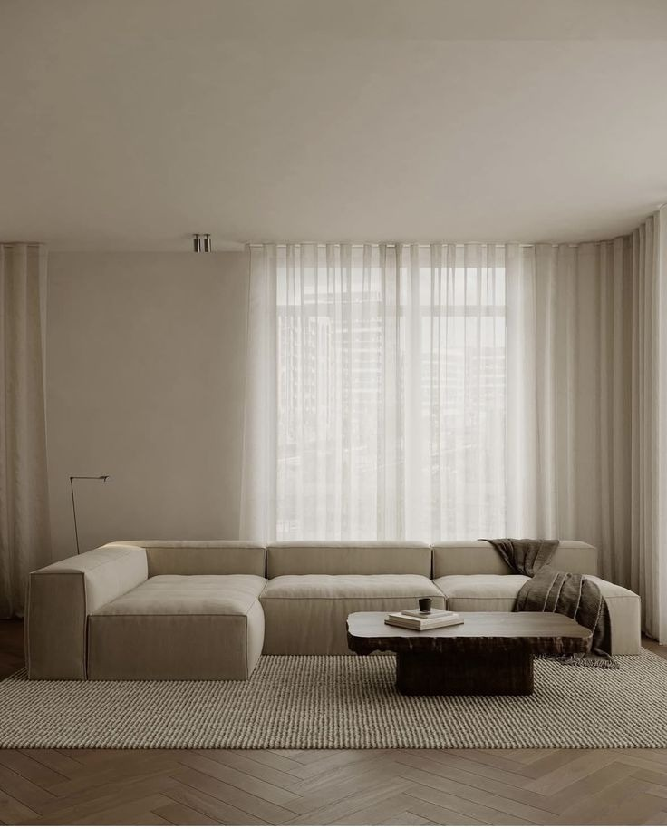
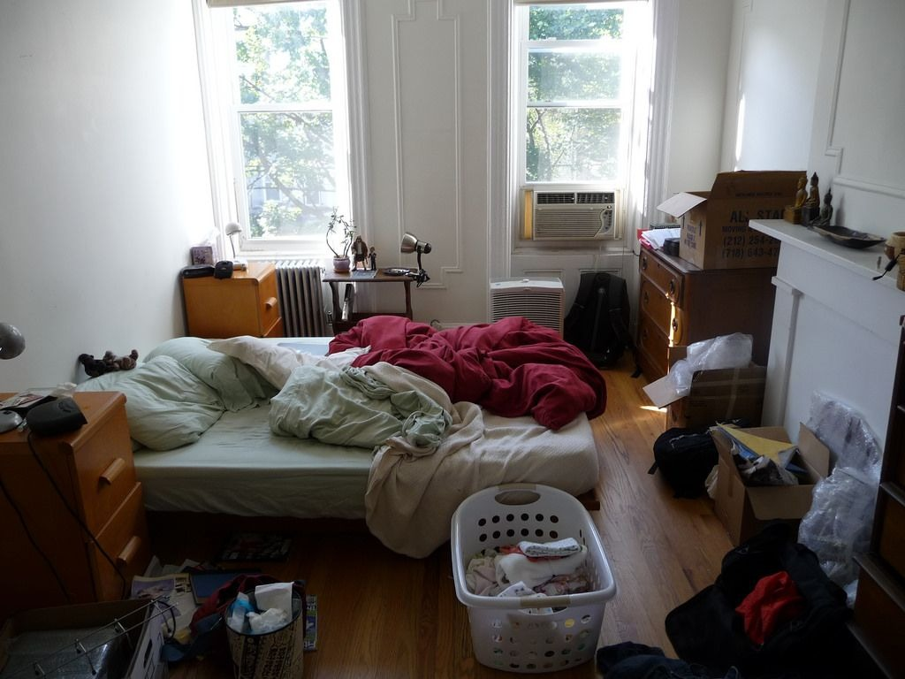
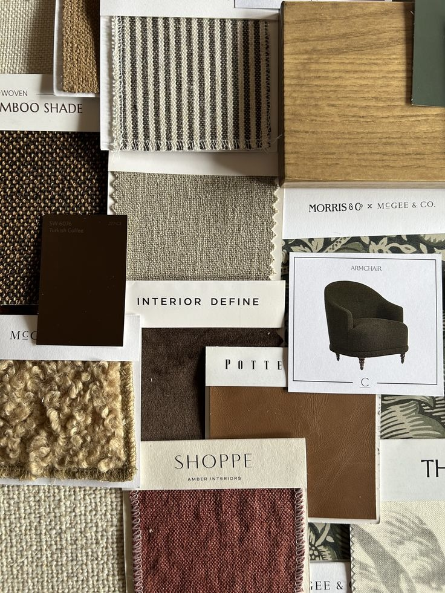
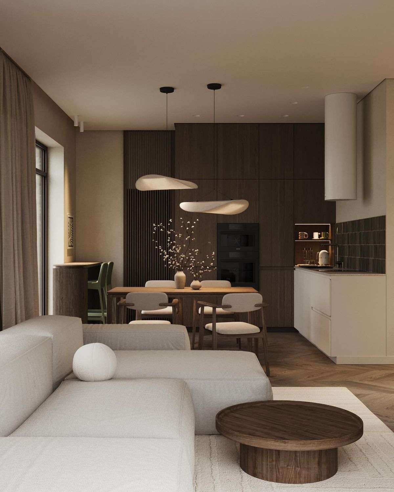
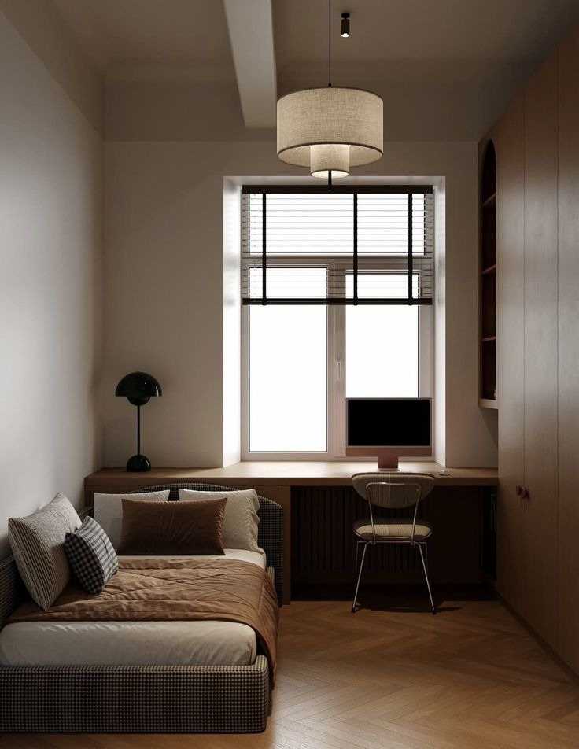
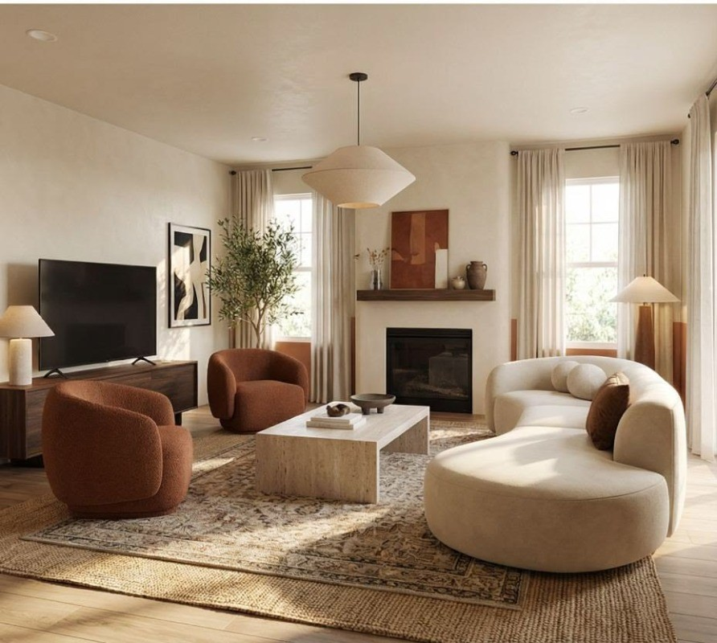
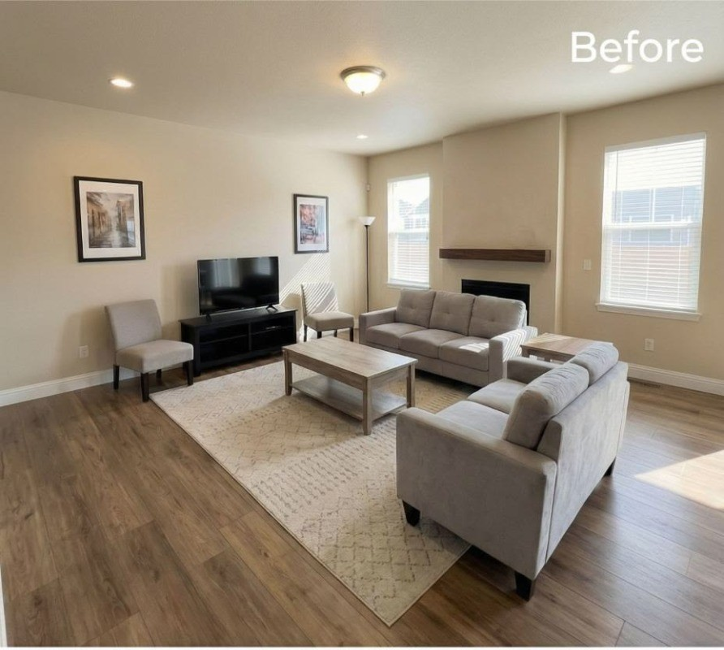

Fotos de noche o con las luces apagadas.
home staging · tucumán
primera
visita
Preparamos tu propiedad para que se venda o se alquile desde la primera visita.
Escribinos por WhatsApp ↗
el problema
¿Tu depto no recibe visitas?
Puede ser la foto.

Ambientes llenos de objetos personales.
Ángulos que achican el ambiente.
Camas sin hacer y cortinas cerradas.
Ambientes vacíos que no muestran escala.
qué hacemos
Más intención.
Más visitas.
01

Diagnóstico
Primera Impresión
Visita de 1 hora + informe con fotos y una lista de cambios priorizada, usando lo que ya tenés.
Consultar ↗02

Staging
completo
Despersonalizamos, reorganizamos y ambientamos con tus objetos y otros alquilados. Propiedad lista para mostrar y sesión de fotos coordinada.
Consultar ↗03

Listo para
alquilar
Plan de equipamiento, lista de compras con presupuesto y armado final para alquileres temporarios o amoblados.
Consultar ↗cómo trabajamos
Simple, claro,
sin vueltas.
- Consulta por WhatsApp→
- Visita→
- Propuesta→
- Intervención
de 1 a 3 días→ - Fotos para
publicar
antes / después
Los detalles
cambian todo.

después
antes↔
Próximamente: nuestros primeros proyectos en Tucumán.
para quién
Vendés o alquilás
tu depto
Tu aviso lleva tiempo publicado y necesitás despertar el interés de los candidatos correctos.
Consultá tu propiedad ↗Tenés un alquiler
temporario
Necesitás equiparlo rápido, con criterio y presupuesto ajustado para recibir mejor y antes.
Equipalo conmigo ↗preguntas
Lo que
te preguntás.
¿Tengo que hacer obra?+
No, trabajamos sin obra.
¿Tengo que comprar muebles nuevos?+
No necesariamente: aprovechamos lo que tenés y sumamos objetos alquilados.
¿Cuánto tarda?+
La intervención lleva de 1 a 3 días.
¿En qué zonas trabajan?+
San Miguel de Tucumán y Yerba Buena.
¿Trabajan con inmobiliarias?+
Sí, podés pedirle a tu inmobiliaria que nos contacte.
¿Cuánto cuesta?+
Depende de la propiedad. Escribinos y te pasamos las opciones y los precios.
diagnóstico
Tu propiedad
puede verse mejor.
Contanos un poco y coordinamos una conversación por WhatsApp.